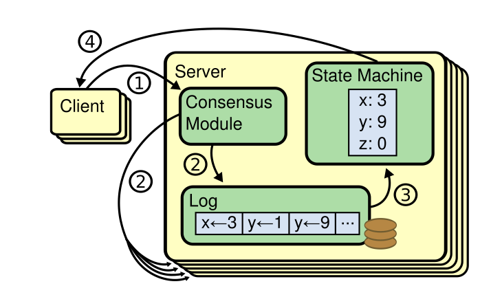
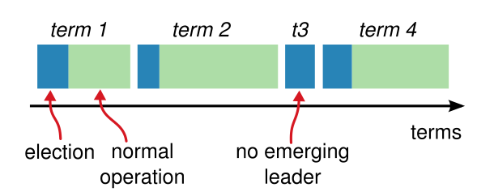
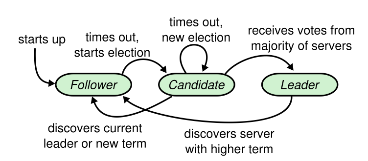

6.824-LAB-2A
准备
在做Lab2之前，先读Raft论文，再看助教写的guide。我们将在这个实验中实现一个Raft系统，为了方便理解协议的运作过程，可以先去Raft官网了解其概念，也可以观看Raft可视化动画。
其他参考资料：
1.Concurrency:locking and structure
2.Debug:Guidance and this blog post about effective print statements
3.Diagram:diagram of Raft interactions
Raft
分布式系统利用共识算法让一组机器构成一个整体，共识算法又需要复制状态机，而复制状态机实现的关键就是复制日志。复制状态机的基本原理如图所示：

在一个Raft集群中，每个服务器有三种角色，分别是leader、candidate和follower，正常情况下是一个leader和多个follower。每个follower都只会被动接收RPCs，只有leader和candidate才能主动发送RPCs。
Raft相比于Paxos，优势在于算法更简单易懂，而且能够将共识问题拆分成leader选举、日志复制和安全性三个部分。对于客户端而言，它只需提交指令到leader即可（联系follower的请求也会被转到leader），当前leader遇到网络问题或宕机时，系统会从剩余服务器中选出一个合适的新leader继续为客户端提供服务。
Raft的逻辑时间是任期term，默认从0开始，且Raft的Election Safety属性规定了每个term最多只能有一个leader。每个term由一个选举阶段和一个常规操作阶段构成，如图所示。如果candidate选举超时后没有当选leader则跳过常规操作阶段直接进入下一个term，并再次选举。

另外，每个服务器都会维持一个currentTerm表示服务器当前所处的term，并在相互通信时捎上该值，这样当服务器在通信时一旦发现自己的term落后，就会主动更新term，并将角色转换成follower，注意还需要将投票清空。相对应的，如果收到处于落后term的服务器发来的请求，则直接拒绝。
1 | func (rf *Raft) updateTermL(newTerm int) { |
系统初始化
服务器初始状态都是follower，而只要它从leader或candidate处收到有效RPCs就会维持在这种follower状态。正常情况下，leader会定期向所有follower发送心跳消息（心跳检测消息本质上就是一种没有携带日志的特殊append消息），如果follower经过一段时间（该段时间称为election timeout）仍未收到，那么它会认为当前系统无leader，并开始选举。
项目中的ticker方法是一个循环自检函数，用来实现上面提到的leader的心跳检测和follower的超时检测。后缀带大写L的是我从代码QA课程中学到的，表示该方法从临界区进入，方便放心访问共享变量，过于真香我立马重构了自己之前的代码。
1 | func (rf *Raft) ticker() { |
选举
一个follower开启选举的流程如下，先进入新一轮term，转换状态为candidate，然后投票给自己，最后并行发送vote请求给集群中的其他服务器。当一个candidate获得主体投票，即超过一半服务器的票数，则判断其赢得选举。赢得选举后，它将转换状态为leader，并广播心跳。需要注意的一点是，这里是所有leader的起点。

当candidate在等待投票结果时，如果收到有效append消息，说明此时系统中已经有一个合法leader在运作，它则会转换成follower。另外，如果有多个follower同时成了candidate可能会遇到投票分裂这种情况，即每个candidate都得不到主体投票最后没法选出leader。而等选举超时后，所有candidate又同时开启新一轮选举，往复循环。为了避免这种情况，Raft规定election timeout从150-300ms随机挑取，而不是一个固定的数字。
1 | func (rf *Raft) timerRefreshL() { |
投票
follower在投票时需要遵循FIFO原则，另外为了维持安全性或者更确切的说是Leader Completeness属性，还需要对哪些服务器能够被选为leader添加一些限制，就是follower只能投票给日志满足up-to-date的candidate。具体来说，对比follower和candidate的日志的最后一个entry，如果candidate一方的entry的term较小，则up-to-date为false，反之为true；如果term相等则继续比下标，如果candidate一方的entry下标较小，则up-to-date为false，大于或等于都为true。
一些细节：
1.candidate收到vote不会更新时间;
2.成为leader后要更新nextIndex和matchIndex。